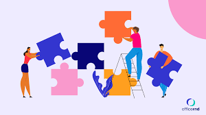
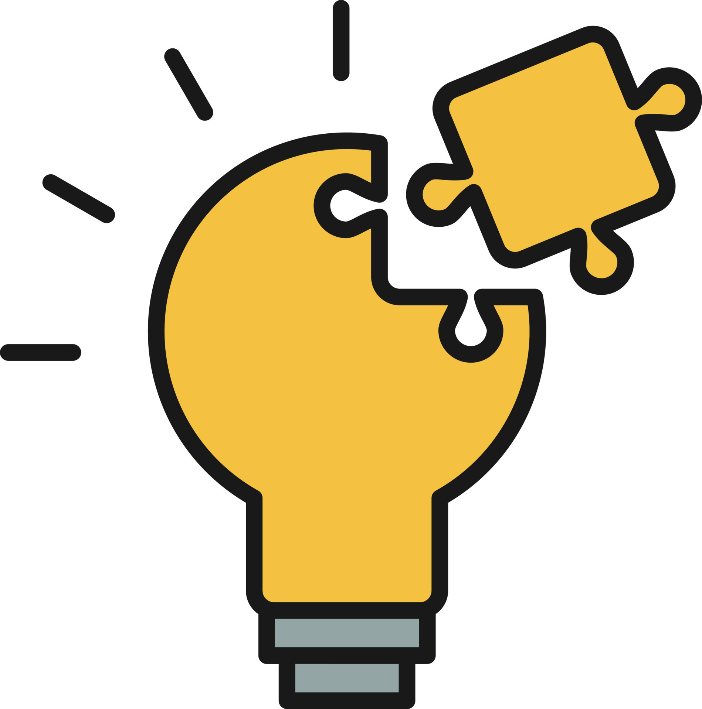
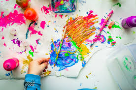

Video Editing
I am proficient in creating and refining videos using Wink.Pro and Final Cut Pro. Editing is where I bring ideas to life.
★★★★☆

Photo Editing
I am skilled in enhancing and retouching images using Photopea and Canva, producing professional visuals for digital and print purposes.
★★★★☆

Microsoft Office
I am competent in using Microsoft Word, Excel, and PowerPoint to manage documents and organize data.
★★★★★

Web Designing
I am experienced in designing visually appealing and user-friendly websites using HTML, CSS, and Figma.
★★★★☆
Leadership
Able to guide and motivate a team towards achieving goals, fostering collaboration and accountability.
Communication
Able to clearly convey ideas and information in written and verbal forms.

Teamwork
Able to work effectively with others, contributing positively to team dynamics.

Problem-Solving
Able to analyze challenges, identify solutions, and implement strategies.
Time Management
Able to prioritize tasks, manage deadlines, and maintain productivity under pressure.
Critical Thinking
Able to evaluate information objectively and make informed decisions.

Creativity
Able to generate innovative ideas and approaches to solve problems or enhance processes.
Decision-Making
Able to make informed and timely decisions that balance risks, benefits, and goals.